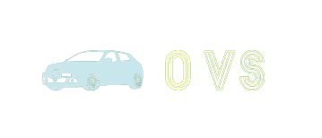

<div class="app-container">
  <mat-toolbar color="accent">
    
    <span class="example-spacer"></span>
    <button mat-icon-button (click)="openHomePage()">
      <mat-icon>home</mat-icon>
    </button>

    <button
      *ngIf="!user"
      mat-icon-button
      class="example-icon favorite-icon"
      (click)="openAuthPage()"
    >
      <mat-icon>account_circle</mat-icon>
    </button>

    <ng-container *ngIf="user">
      <button
        mat-icon-button
        [matMenuTriggerFor]="menu"
        aria-label="Example icon-button with a menu"
      >
        <mat-icon>account_circle</mat-icon>
      </button>
      <mat-menu #menu="matMenu">
        <button mat-menu-item (click)="openOrdersPage()">
          <mat-icon>person</mat-icon>
          <span>{{ user?.email }}</span>
        </button>
        <button mat-menu-item (click)="adminPage()" *ngIf="isAdmin">
          <mat-icon
            ><span class="material-symbols-outlined">
              admin_panel_settings
            </span></mat-icon
          >
          <span>Administration</span>
        </button>
        <button mat-menu-item (click)="logout()">
          <mat-icon>logout</mat-icon>
          <span>Logout</span>
        </button>
      </mat-menu>
    </ng-container>
  </mat-toolbar>

  <router-outlet></router-outlet>
</div>
